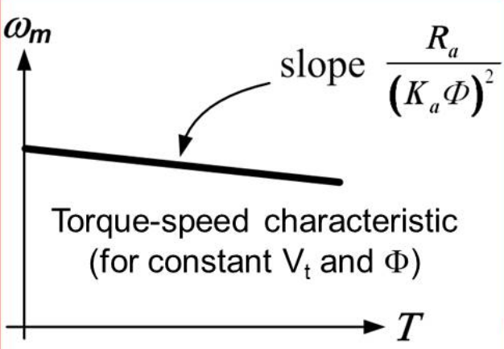

class: center, middle # EE-462 UTILIZATION OF ELECTRICAL ENERGY # DC Motors ## Ozan Keysan ## [keysan.me](http://keysan.me) ### Office: C-113 <span class="meta">•</span> Tel: 210 7586 --- # Operation Principle of DC Motors -- #Lorenz Force ## \\(\vec{F} = \vec{J} \times \vec{B}\\)  #### [Magnetic Force and Relativity](http://www.youtube.com/watch?v=1TKSfAkWWN0) --- # DC Machine Working Principle <img src="http://hyperphysics.phy-astr.gsu.edu/hbase/magnetic/imgmag/dcmop.gif" alt="Drawing" style="width: 550px;"/> ### [How DC motors work?](http://www.youtube.com/watch?v=LAtPHANEfQo) --- # How can you increase the torque of a DC Machine? <img src="http://myslu.stlawu.edu/~jmil/physics/labs/104_lab/setup_manual/gifs/DCMotor05.jpg" alt="Drawing" style="width: 600px;"/> --- # Ways to increase torque in a DC Motor? -- - ## Increase Field Density (More Magnet, or less reluctance) -- - ## More Current (Limited by cooling) -- - ## Increase the length (force increases) -- - ## Increase the radius (torque increases) --- # DC Machine Parts <img src="https://evmc2.files.wordpress.com/2014/12/step2_img01.jpg" alt="Drawing" style="width: 750px;"/> --- # Model of DC Motors <img src="http://image.slidesharecdn.com/new-economic-models-of-search-2-140709223709-phpapp01/95/modelling-search-interaction-with-economic-models-4-638.jpg" alt="Drawing" style="width: 750px;"/> --- #Simplest Equivalent Circuit of a DC Machine ### A voltage source (proportional to speed) connected in series with a resistance (Armature resistance) -- <img src="http://www.electrical4u.com/images/equivalent-circuit-of-pmdc-.gif" alt="Drawing" style="width: 400px;"/> ### Under constant flux (as in permanent magnet DC machine) --- # Induced Voltage in Armature -- # \\(E\_a = K\_a \omega\_m \Phi\_{pp}\\) -- - ### \\(E\_a\\): Induced armature voltage - ### \\(K\_a\\): Armature Constant - ### \\(\omega\_m\\): Mechanical Speed (rad/s) - ### \\(\Phi\_{pp}\\): Flux per-pole --- # DC Machines -- ## Motor Action: Electrical Energy is converted to Mechanical Energy -- ## Generator Action: Mechancial Energy is converted to Electrical Energy -- ## No difference between a [DC motor and generator](http://www.youtube.com/watch?v=6kgzrXFSDwA) ## Just a mode of operating point --- # Induced Voltage in Armature -- # \\(E\_a = K\_a \omega\_m \Phi\_{pp}\\) -- - ### \\(E\_a\\): Induced armature voltage - ### \\(K\_a\\): Armature Constant - ### \\(\omega\_m\\): Mechanical Speed (rad/s) - ### \\(\Phi\_{pp}\\): Flux per-pole --- # Equivalent Circuit of a DC Motor ## When the flux is generated by another coil (Field Winding) -- <img src="http://cnx.org/resources/1a0fc7a424e633c62ac4fb3e20d75ceb/graphics1.png" alt="Drawing" style="width: 600px;"/> --- # Equivalent Circuit of a DC Motor <img src="http://cnx.org/resources/1a0fc7a424e633c62ac4fb3e20d75ceb/graphics1.png" alt="Drawing" style="width: 600px;"/> ## If \\(V\_a > E\_a\\) motoring action -- ## If \\(E\_a > V\_a\\) generating action --- # Losses in the Machine <img src="http://cnx.org/resources/1a0fc7a424e633c62ac4fb3e20d75ceb/graphics1.png" alt="Drawing" style="width: 600px;"/> ## Copper Loss = Armature Loss + Field Loss -- ## \\(P\_{copper} = I\_a^2 R\_a + I\_f^2 R\_f \\) --- # Electromechanical Power <img src="http://cnx.org/resources/1a0fc7a424e633c62ac4fb3e20d75ceb/graphics1.png" alt="Drawing" style="width: 600px;"/> ### Electromechanical Power = Armature Power - Armature Losses -- ## \\(P\_{e} = V\_a I\_a - I\_a R\_a = E\_a I\_a \\) --- # Electromechanical Power <img src="http://cnx.org/resources/1a0fc7a424e633c62ac4fb3e20d75ceb/graphics1.png" alt="Drawing" style="width: 300px;"/> ## Electromechanical Power = \\(E\_a I\_a \\) ### Either converted from electrical energy to mechanical energy (motoring mode) ### or converted from mechanical energy to electrical energy (generating mode) --- # Torque Relations <img src="http://cnx.org/resources/1a0fc7a424e633c62ac4fb3e20d75ceb/graphics1.png" alt="Drawing" style="width: 500px;"/> ## \\(P\_{mech} = \\) -- \\( T \omega = E\_a I\_a \\) -- ## \\( T \omega = K\_a \omega \Phi\_{pp} I\_a \\) -- ## \\(T =K\_a \Phi\_{pp} I\_a \\) --- # Torque Proportional to Current # \\(T =K\_a \Phi\_{pp} I\_a \\) --- # What happens to DC motor at start-up? -- ## Rotor speed is zero: \\(\omega =0 \\) ### Induced armature voltage: -- \\(E\_a = K\_a \omega\_m \Phi\_{pp}=0\\) -- ## Armature Current: \\(I\_a = (V\_t -E\_a)/R\_a\\) ## Maximum Torque at Startup --- # Maximum Torque at Startup -- ## Result: Never attempt a drag race with an electric car. <img src="http://www.bangshift.com/forum/filedata/fetch?id=1042213&d=1435554776&type=full" alt="Drawing" style="width: 500px;"/> - [White zombie drag race](https://youtu.be/vGQSQAz9v6c?t=5s) - [White zombie](https://www.youtube.com/watch?v=zLjnRj2Dhwk) - [White zombie inside](https://youtu.be/OfbPf3WExwU?t=1m25s) --- # Summary - ## Induced Voltage Proportional to Speed ## \\(E\_a = K\_a \omega\_m \Phi\_{pp}\\) -- - ## Torque Proportional to Armature Current ## \\(T =K\_a \Phi\_{pp} I\_a \\) ### [How to read a datasheet](http://www.maxonmotor.com/maxon/view/category/motor?target=filter&filterCategory=DC-max) --- # DC Machine Types -- ## Everthing is same just different ways of connecting the field winding! -- <img src="images/dc_machine_types.jpg" alt="Drawing" style="width: 800px;"/> ### As a result \\(\Phi\_{pole} \\) is not constant but a function of field current. ### For more information [EE361 Notes](http://keysan.me/ee361) --- # Separately Excited DC Machines <img src="http://cnx.org/resources/1a0fc7a424e633c62ac4fb3e20d75ceb/graphics1.png" alt="Drawing" style="width: 674px;"/> ### Field is excited with a separate source ### Flexible Control (Field Current controls \\(\phi\_{pp}\\)) --- # Magnetization Characteristics ## What is the relation between \\(I_f\\) and \\(E_a\\)? --  --- #Magnetization Characteristics ### In the Linear Region ## \\(\phi = K_f I_f\\) -- ### Induced Voltage ## \\(E_a = K_a \omega_m \phi = K_a \omega_m K_f I_f\\) -- ### Torque ## \\(T = K_a K_f I_a I_f\\) --- # Separately Excited DC Machines ## \\(\omega_m = \dfrac{V_t}{K_a \Phi} - \dfrac{R_a}{(K_a \Phi)^2}T \\)  --- --- # Series Wound DC Machine <img src="http://electriciantraining.tpub.com/14177/img/14177_44_1.jpg" alt="Drawing" style="width: 450px;"/> ## Field winding in series with armature ## Field current = Armature Current ==> \\(I_f = I_a\\) --- # Series Wound DC Machine <img src="http://electriciantraining.tpub.com/14177/img/14177_44_1.jpg" alt="Drawing" style="width: 450px;"/> ## What happens if AC is applied to series DC motor? --- # Universal Motor ## Series DC motors work both with DC and AC <img src="http://woodgears.ca/motors/dc_02.jpg" alt="Drawing" style="width: 450px;"/> ## [Universal Motor](https://www.youtube.com/watch?v=0PDRJKz-mqE) [More Information](https://en.wikipedia.org/wiki/Universal_motor) --- # Series Wound DC Motor <img src="http://electriciantraining.tpub.com/14177/img/14177_44_1.jpg" alt="Drawing" style="width: 350px;"/> ### \\(V\_t = E_a + (R\_a + R\_f) I_a\\) -- ### \\(E_a = K_a \omega_m \phi \\) ==> \\(\phi = K_s I_a\\) -- ### \\(T_e = K_a \phi I_a = K_a K_s I_a^2\\) --- # Series DC Motor <img src="http://www.tpub.com/doeelecscience/electrical%20science2_files/image664.jpg" alt="Drawing" style="width: 600px;"/> ## Never run a series DC motor at no load! --- # Series DC Motor <img src="http://3.bp.blogspot.com/-cUu8u-bZm0o/U7qEkWngbRI/AAAAAAAAA58/-7F6w5isurc/s1600/Characteristics+of+DC+series+motor.png" alt="Drawing" style="width: 800px;"/> ## Torque increases with the square of the armature current --- # Series DC Motor <img src="http://www.trainweb.org/tgvpages/images/maintain/bogie.jpg" alt="Drawing" style="width: 400px;"/> ### High starting torque ### Applications: Traction motors,cranes, [example1](http://www.cgglobal.com/frontend/ProductDetail.aspx?id=j7Cu6ITnQ60=),[example2](http://www.kirloskar-electric.com/products/traction/dc-traction-motor-ktm-15250.html#),[example3](http://www.tulomsas.com.tr/en/main.php?kid=198&rid=103) ### At no load speed increases dangerously --- ## Speed Control of DC Motors -- - ## Armature Voltage Control (\\(V_t\\)) -- - ## Field Current Control (\\(I_f\\)) (and hence flux) -- - ## Vary Both --- # Armature Voltage Control -- - ## Speed Control over a wide range - ## Commonly used --- # Armature Voltage Control <img src="http://www.electrical4u.com/electrical/wp-content/uploads/2013/04/voltage-control-9-3-15.gif" alt="Drawing" style="width: 800px;"/> --- # Field Current Control -- - ## An external resistor or variable voltage supply -- - ## Usually used to achieve higher speeds --> -- Decrease \\(I_f\\) (Flux weakening) -- - ## Speed control over a narrow range --- # Field Current Control <img src="http://www.electrical4u.com/electrical/wp-content/uploads/2013/04/Field-Flux-Control-of-DC-Motor-9-3-15.gif" alt="Drawing" style="width: 800px;"/> --- # Field Current Control -- ### Which one is larger \\(L_a\\) or \\(L_f\\)? -- ### Field current is easier to control due to low current values, but has a much higher electrical time constant -> sluggish response <img src="./images/ee462/dc_field_control.png" alt="Drawing" style="width: 400px;"/> ### \\(\tau_a = 50ms \quad\quad \tau_f = 1s\\) --- ## Armature-Field Current Control ### Armature Voltage Control region is also known as Constant Torque region -- ### Field Current Control region is also known as Field Weakening or Constant Power region. --- ## Armature-Field Current Control <img src="http://www.electrical4u.com/electrical/wp-content/uploads/2013/04/torque-power-characteristic-9-3-15.gif" alt="Drawing" style="width: 500px;"/> --- ## Armature-Field Current Control <img src="./images/ee462/armature_fiels.png" alt="Drawing" style="width: 400px;"/> ### For standard motors: \\(\omega\_{max} \approx 1.15 \omega\_{base}\\) -- ### For special motors: \\(\omega\_{max} \approx 1.7 \omega\_{base}\\) --- ## Overloading Capability <img src="./images/ee462/overload.png" alt="Drawing" style="width: 700px;"/> ### It is possible to achieve higher drive performance by exploiting overloading capacity --- ## Permanent Magnet DC Motors --- ## You can download this presentation from: [keysan.me/ee462](http://keysan.me/ee462)